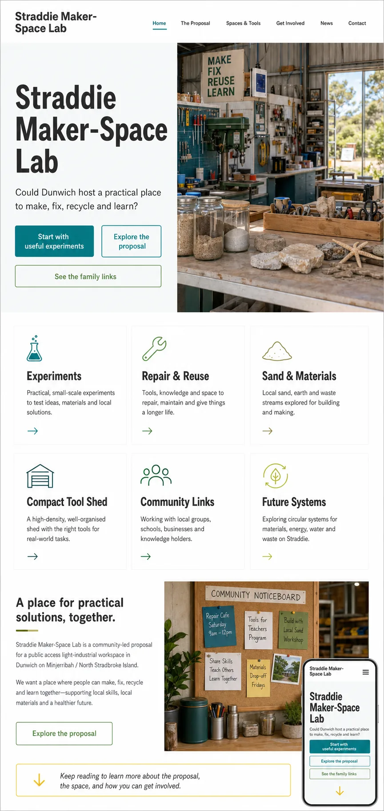

Maker-space and citadel notes
Strategic Blueprint for an Industrial Makerspace and Subterranean Silica Citadel in South East Queensland
Makerspace Evolution to Underground Citadel
This page keeps the source trail visible without exposing private local paths. It names the documents, archive routes, public pages and design assets reviewed for this public prototype.
These files shaped the maker-space, resilience, community-priority and future-systems framing. They are treated as working source material, not public authority.
Strategic Blueprint for an Industrial Makerspace and Subterranean Silica Citadel in South East Queensland
Makerspace Evolution to Underground Citadel
Blueprint Resilient Minjerribah
Island Resilient Community Priorities
07April2026-B Straddie Resilience Plan
Roadmap for Multicultural Grant
The local START_HERE agent navigation pointed to Minjerribah / Straddie local systems, energy / minerals / infrastructure, Civilisation of Sand / Silica Stack, and Subterranean Civilisation routes.
03_Innovation_Engine.md; Ready_SET_Co._Business_Strategy_Development.md; SETCo_2026_Pitch_Plan_Revision.md; 10_Companies_All_At_Once.md.
Bladeless_Tidal_&_Wave_Energy_Systems_for_Minjerribah; Wave_Energy_Design_Research_&_Validation.md; Civilisation_of_Sand.md.
The_Amity_Stratum.md; Silica_Citadel_Education.md; Subterranean_(3)_City__Multigenerational_Resilience_Framework.md; Subterranean_Crystal_City_Kardashev_Ground_Station.md.
A generated home-page concept set the public design direction: light workshop background, charcoal type, sea-glass teal, mineral green, restrained safety-yellow accents, gateway cards, and a hero image showing a compact maker-space rather than a glossy tech lab.

These links are public pathways for readers. They are not endorsements or approval claims.
The supplied YouTube playlist is used as inspiration for high-density workshop organisation.
Open playlistA short, repo-local digest captures what this site took from the source pass.
Open source notesRedland City Council's island recycling page and waste-centre listing ground the tip-loop concept in the existing public waste pathway.
Open NSI recyclingCouncil lists the North Stradbroke Island Recycling and Waste Centre at 100 East Coast Road with opening hours and payment notes.
Open waste-centre listingRecycleWorld is a Redland City Council trash-and-treasure facility at Redland Bay. It is a reuse precedent, not proof of a Straddie approval.
Open RecycleWorldThe maker-space forms follow the public-safe Markdown builder pattern from the Straddie Content Assets Kit.
Open shared-assets builderRecent councillor posts reportedly mention possible additional recycling facilities for Straddie. This site treats that as a live lead to verify, not confirmed policy.
See Tip Loop framingThis site is designed to invite better questions. It is not a planning submission, cultural approval, engineering design, legal opinion, funding commitment, land-use claim, mining proposal, safety manual or official community position.
Any real project belongs in proper relationship with the relevant Traditional Custodians, cultural authority and local community processes.
Any public access tool room needs current safety systems, supervision, insurance, inductions and professional advice.
Any material, waste, mineral, sand or construction experiment needs lawful sourcing, environmental care and specialist review.
{kind=link}
{kind=link}